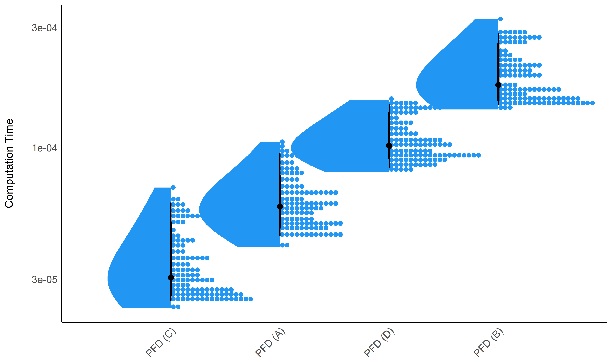

Measuring Chaos: Complexity and Fractal Physiology using NeuroKit2
Contents
Measuring Chaos: Complexity and Fractal Physiology using NeuroKit2#
This study can be referenced by citing the package and the documentation.
We’d like to improve this study, but unfortunately we currently don’t have the time. If you want to help to make it happen, please contact us!
Introduction#
The goal for NeuroKit is to provide the most comprehensive, accurate and fastest base Python implementations of complexity indices (fractal dimension, entropy, etc.).
Methods#
Data Generation#
The script to generate the data can be found at …
library(tidyverse)
library(easystats)
library(patchwork)
df <- read.csv("data_Signals.csv") |>
mutate(Method = as.factor(Method),
Noise = as.factor(Noise),
Intensity = as.factor(insight::format_value(Noise_Intensity)))
df <- df |>
filter(Intensity %in% levels(df$Intensity)[c(1, round(length(levels(df$Intensity)) / 2), length(levels(df$Intensity)))])
p1 <- df |>
filter(Method == "Random-Walk") |>
ggplot(aes(x = Duration, y = Signal)) +
geom_line(color = "red") +
facet_grid(Intensity ~ Noise, labeller = label_both) +
labs(y = NULL, title = "Random-Walk") +
theme_minimal() +
theme(plot.title = element_text(hjust = 0.5))
p2 <- df |>
filter(Method == "lorenz_10_2.5_28") |>
ggplot(aes(x = Duration, y = Signal)) +
geom_line(color = "blue") +
facet_grid(Intensity ~ Noise, labeller = label_both) +
labs(y = NULL, title = "Lorenz (sigma=10, beta=2.5, rho=28)") +
theme_minimal() +
theme(plot.title = element_text(hjust = 0.5))
p1 / p2 + patchwork::plot_annotation(title = "Examples of Simulated Signals", theme = theme(plot.title = element_text(face = "bold", hjust = 0.5)))

Results#
Average Computation Time#
df <- read.csv("data_Complexity.csv") |>
mutate(Method = as.factor(Method))
colors = c("PFD (A)" = "#2196F3",
"PFD (B)" = "#2196F3",
"PFD (C)" = "#2196F3",
"PFD (D)" = "#2196F3")
order <- df |>
group_by(Index) |>
summarize(Duration = median(Duration)) |>
arrange(Duration) |>
mutate(Index = factor(Index, levels = Index))
df <- mutate(df, Index = fct_relevel(Index, as.character(order$Index)))
df |>
ggplot(aes(x = Index, y = Duration)) +
# geom_violin(aes(fill = Index)) +
ggdist::stat_slab(side = "bottom", aes(fill = Index), adjust = 3) +
ggdist::stat_dotsinterval(aes(fill = Index, slab_size = NA)) +
theme_modern() +
scale_y_log10() +
scale_fill_manual(values = colors, guide = "none") +
theme(axis.text.x = element_text(angle = 45, vjust = 1, hjust=1)) +
labs(x = NULL, y = "Computation Time")

Sensitivity to Signal Length#
Visualization#
dfsummary <- df |>
group_by(Index, Length) |>
summarize(CI_low = median(Duration) - sd(Duration),
CI_high = median(Duration) + sd(Duration),
Duration = median(Duration))
dfsummary$CI_low[dfsummary$CI_low < 0] <- 0
ggplot(dfsummary, aes(x = Index, y = Duration)) +
# geom_hline(yintercept = c(0.001, 0.01, 0.1, 1), linetype = "dotted") +
geom_line(aes(alpha = Length, group = Length)) +
geom_point(aes(color = Length)) +
theme_modern() +
scale_y_log10(breaks = c(0.001, 0.01, 0.1, 1)) +
theme(axis.text.x = element_text(angle = 45, vjust = 1, hjust=1)) +
guides(alpha = "none") +
labs(y = "Time to compute", x = NULL, color = "Signal length")

Average#
df |>
ggplot(aes(x = as.factor(Length), y = Duration)) +
# geom_hline(yintercept = c(0.001, 0.01, 0.1, 1), linetype = "dotted") +
geom_line(data=dfsummary, aes(group = 1)) +
geom_violin(aes(fill = Length)) +
facet_wrap(~Index) +
scale_y_log10(breaks = c(0.001, 0.01, 0.1, 1)) +
scale_fill_viridis_c(guide = "none") +
theme_modern() +
theme(axis.text.x = element_text(angle = 45, vjust = 1, hjust=1))

Model-based#
model <- lm(Result ~ Index / poly(Length, 2), data = df)
parameters::parameters(model, keep = "poly") |>
arrange(desc(abs(Coefficient)))
## Parameter | Coefficient | SE | 95% CI | t(468) | p
## ----------------------------------------------------------------------------------------------
## Index [PFD (A)] * poly(Length, 2)1 | -0.06 | 3.66e-03 | [-0.07, -0.06] | -17.40 | < .001
## Index [PFD (B)] * poly(Length, 2)1 | -0.04 | 3.66e-03 | [-0.05, -0.04] | -11.84 | < .001
## Index [PFD (A)] * poly(Length, 2)2 | 0.03 | 3.66e-03 | [ 0.03, 0.04] | 8.85 | < .001
## Index [PFD (B)] * poly(Length, 2)2 | 0.02 | 3.66e-03 | [ 0.02, 0.03] | 6.09 | < .001
## Index [PFD (C)] * poly(Length, 2)1 | -0.01 | 3.66e-03 | [-0.02, 0.00] | -3.22 | 0.001
## Index [PFD (C)] * poly(Length, 2)2 | 8.30e-03 | 3.66e-03 | [ 0.00, 0.02] | 2.27 | 0.024
## Index [PFD (D)] * poly(Length, 2)2 | 6.73e-05 | 3.66e-03 | [-0.01, 0.01] | 0.02 | 0.985
## Index [PFD (D)] * poly(Length, 2)1 | -6.18e-05 | 3.66e-03 | [-0.01, 0.01] | -0.02 | 0.987
estimate_relation(model) |>
ggplot(aes(x = Length, y = Predicted)) +
geom_ribbon(aes(ymin = CI_low, ymax = CI_high, fill = Index), alpha = 0.1) +
geom_line(aes(color = Index)) +
geom_point(data = df, aes(y = Result, color = Index)) +
scale_fill_manual(values = colors) +
scale_color_manual(values = colors) +
facet_wrap(~Index, scales = "free")

Correlation#
data <- df |>
mutate(i = paste(Signal, Length, Noise, Noise_Intensity, sep = "__")) |>
select(i, Index, Result) |>
pivot_wider(names_from = "Index", values_from = "Result") |>
select(-i)
cor <- correlation::correlation(data, method = "spearman") |>
cor_sort()
cor |>
mutate(Text = insight::format_value(rho),
Parameter2 = fct_rev(Parameter2)) |>
ggplot(aes(x = Parameter2, y=Parameter1)) +
geom_tile(aes(fill = rho)) +
geom_text(aes(label = Text)) +
scale_fill_gradient2(low = '#2196F3', mid = 'white', high = '#F44336', midpoint = 0, limit = c(-1, 1), space = 'Lab', name = 'Correlation', guide = 'legend') +
scale_x_discrete(expand = c(0, 0)) +
scale_y_discrete(expand = c(0, 0)) +
labs(title = "Correlation Matrix of Complexity Indices", x = NULL, y = NULL) +
theme_minimal() +
theme(axis.text.x = element_text(angle=45, hjust = 1),
plot.title = element_text(hjust = 0.5),
panel.grid.major = element_blank(),
panel.grid.minor = element_blank())

Hierarchical CLustering#
rez <- parameters::cluster_analysis(as.data.frame(t(data)), n=4, method="hclust", hclust_method="ward.D2")
# plot(rez)
attributes(rez)$model |>
plot(hang = -1)